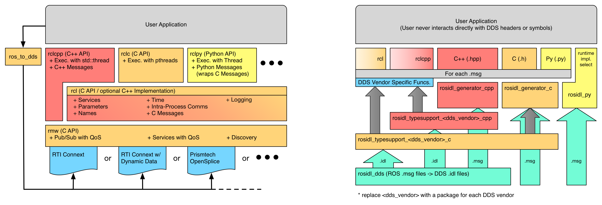

1.0 - History
- 2007 : Stanford (STAIR, PR1)
- 2007 : Topology : Master/Node/Param Server concepts fixed
- 2007 : Transports : reliable (TCP)/unreliable (UDP) types defined
- 2007 : Messaging Patterns : publishers, subscribers & services
- 2007 : Implementation : Posix C++
- 2008 : Moved to Willow Garage
- 2008 : Reference Robot : PR2
- 2008 : Implementation : Lisp
- 2009 : Implementation : Python
- 2009 : Implementation : ARM support for c++
- 2009 : Messaging Patterns : actions (c++/python)
- 2010 : Nodelets (IntraProcess, c++ only)
- 2010 : 1.0 Release
- 2011 : Reference Robot : Turtlebot
- 2011 : Implementation : Windows support for c++
- 2011 : Implementation : Java/Android
- 2012 : ROS 2.0 movement started
- 2014 : Transferred to OSRF
1.0 - Motivation
Designed to be flexible, but use case targets imposed some
artificial boundaries
due to lack of coverage when developing/testing (primary
driver was the PR2).
ROS 1.0 is ideally primed for:
- Complex Robots
- Single Robot/Workstation environments
- Robotics Research Labs
1.0 - Topology
Master - name registration and lookup
Node - processes that perform computation.
Parameter Server - centralised data storage typically used for configuration of nodes.
Topics - where publishers and subscribers interact.
Services - where service servers and clients interact.
Names - filesystem-like naming structure for all ROS components (e.g. /stanford/robot/name)
The glue for making this work is via xmlrpc servers at each component.
1.0 - Topology
TODO : image showing 1) master/param, 2) nodes, 3) registrations, 4) connection
http://wiki.ros.org/Master
1.0 - Transports
Conceptually organised as reliable
or unreliable.
TCPROS - implements reliable behaviour, implicit shortcuts
for local machine and intraprocess (c++ only) connections.
UDPROS - implements unreliable behaviour, few configuration
options, incomplete support (c++ only).
Other options (e.g. shared memory) were explored, but discarded. Consensus was: 1) fast ->
use c++ intraprocess connections, 2) convenience -> use python tcpros connections.
1.0 - Messaging
Binary wire format, but not self-describing.
Headers, modules, artifacts automatically generated at build-time from
external yaml-like text files.
Support for composition of messages, but not inheritance.
Message standards derived from common usage patterns in the community (~C++/Boost).
Formalised via REP (~ python PEP's).
A limited set of messaging patterns exist : pubsub, services (blocking),
actions (non-blocking services with a feedback channel).
1.0 - Parameter Server
Centralised key-value data storage.
Primarily used as for static, pre-launch configuration of nodes.
1.0 - Language Implementations
C++ - full support for transports, topics, services, actions and parameter serving.
Type-safe api. Runs on posix, arm and windows. Building on windows is difficult.
Python - only missing UDPROS transport. Python 2.x and
3.x.
Java/Android - missing actions, builds with gradle/android studio.
Lisp - unsure...
Java Script - popular, but rapidly changing & unofficial support over websockets.
2.0 - DDS
It’s a standard
Several implementations - and these talk to each other, low risk.
Big users - connect to NASA, US Military.
Wireless support - very high level, driven by space applications.
Very Flexible/Detailed - can meet all of ROS' MW needs.
Current Vendor Choice - OpenSplice.
Current Design Goal - hide complexity, but leave it accessible for power users.
2.0 - ROS Client Library Stack
User interacts with ros client libraries, which in turn interacts with DDS implementations.

2.0 - Discovery & Segmentation
- Discovery
- Nodes use Multicast/Broadcast UDP to find each other
- Implemented with the SDP/SPDP/SEDP protocols from DDS.
- Domains
- DDS Concept
- Connect to each other on separate multicast domains.
- Replaces the old concept of a ROS Master
- Partitions
- DDS Concept
- Abstract partitioning for nodes on a single domain.
- Like partitions on a hard drive, but more flexible.
2.0 - Transports
- Focus on reliable and unreliable
- Build up profiles for connection configurations and apply it to configure
all unreliable connections on a system.
- This is important for settings that can be configured by a system integrator
- e.g. Standard Wireless Lab Profile
- e.g. Outdoors Wireless.
- Differentiate for transport hints that must be applied programmatically
- This is important for settings that effect how you write code
- Save backlogs to send when a wireless connection gets reestablished.
- Make use of multicast when available (when DDS layer supports it).
2.0 - Names
Dynamic Remappings
- Runtime Renaming
- Aliasing
- e.g. alias /foo to /foo_compressed with lz compression
Useful for managing and building up complex systems.
2.0 - Languages
C Api - use as a basis for client library bindings (N/A in ROS 1.0).
C++/Python - worked well for ROS 1.0, no reason to change it.